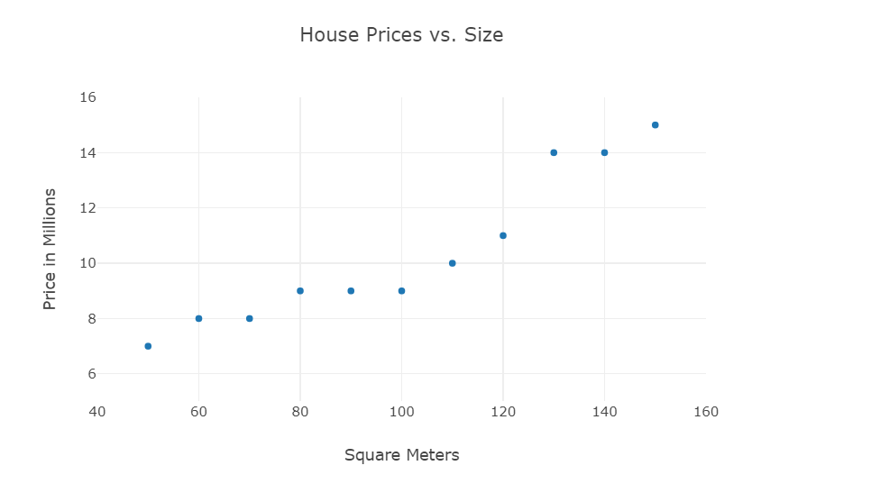
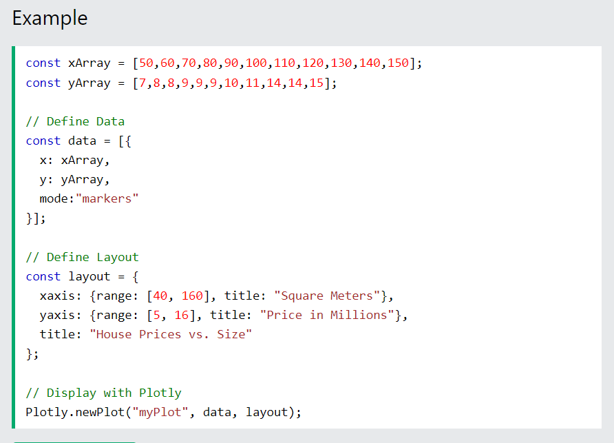
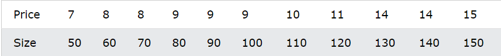
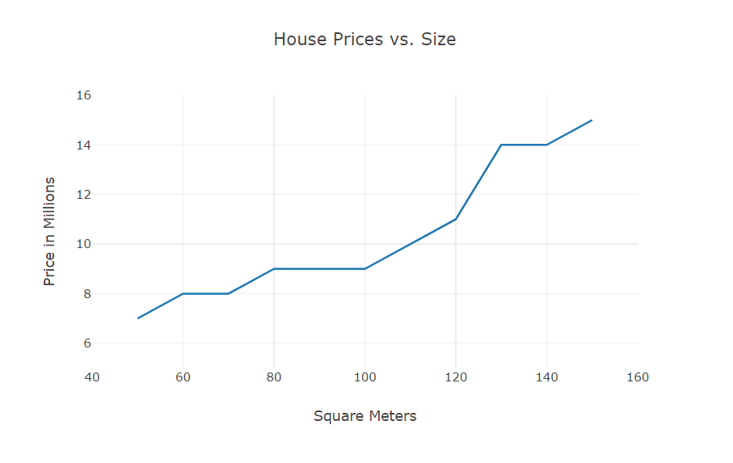
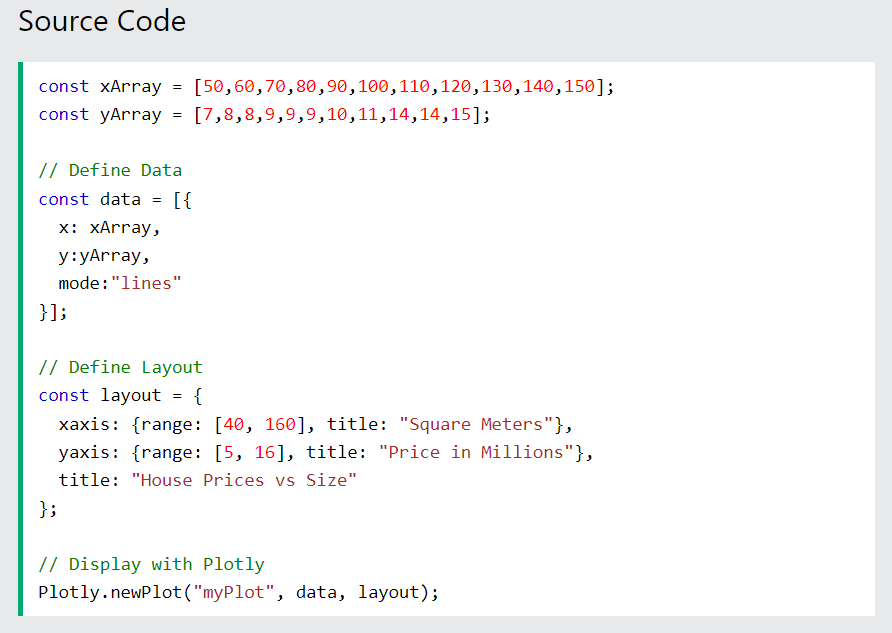

Collecting data is the most important part of any Machine Intelligence projects.
The most common data to collect are numbers and measurements.
Often data are stored in arrays representing the relationship between values.
This table contains house prices versus size:
A Scatter Plot has points scattered over an area representing the relationship between two values.
 A Graph can also be used to show the same values:
  Scatter plots are great for: